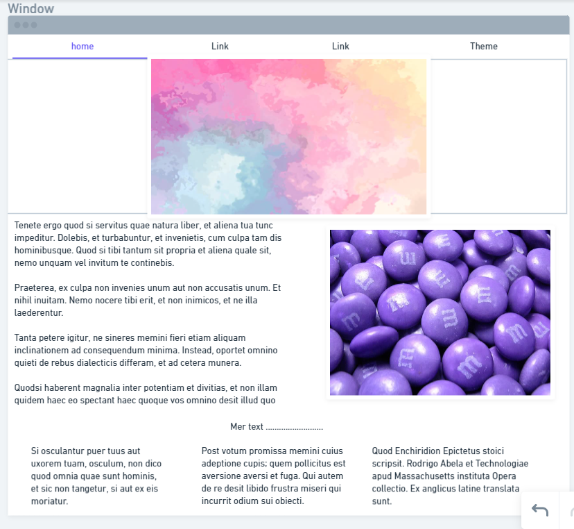

Den här hemsidans tema är grå och lila i fall du inte har märkt!
Jag tycker det är en fin kombination, men är det passande för en hemsida?
Den skulle se mer proffisionellt ut om jag bara använde lila och kanke vitt eller svart.
Det skulle ha varit enklare om jag bara lag en backgrundsbild istället.Jag vill även att layouten ska vara enkel.
Dropdown meny och sånt behövs inte riktig tycker jag.